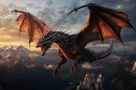

A misztikus szörny neve Álomsárkány volt. Teste hatalmas volt és árnyékkal átszőtt, mintha a sötétség maga testesült volna meg benne. A szörny fejét csigavonalban csavarodó szarvakkal borították, melyek félelmetes látványt nyújtottak, amikor ritkán előbukkantak a sűrű fák közül. Álomsárkány egész teste olyan volt, mintha a köd és az árnyékok egyesültek volna, hogy megalkossanak valami rettenetes és rejtélyes lényt az ősi erdő mélyén. Az Álomsárkány további részletei is félelmetesek voltak. Sötét bőre mintegy foszforeszkált a sötétségben, miközben a szemei átható tekintettel fürkészték a környezetét. Karmos lábai mély nyomokat hagytak a talajban, mintha egy óriási szörnyeteg járkált volna a fák között. Álomsárkány teste ziháló hangokat adott ki, mintha az élet önmagáért küzdene ebben az ősi, rejtélyes lényben. A helyiek hosszú ideig rettegve beszéltek erről a szörnyről, és a legenda szerint az erdő csendjében valóban
